- 关于我们
- 简介 
- 发展历程
- 企业荣誉
公司简介
公司成立于1984年，1988年进入房地产行业，经过三十余年的发展，为国内领先的房地产公司。2016年公司首次跻身< 财苗 > “世界500强”，位列榜单第356位；2017年再度上榜，位列榜单第307位。
公司定位于城市配套服务商，坚持“为普通人盖好房子，盖有人用的房子”，坚持与城市同步发展、与客户同步发展的两 条主线。公司核心业务包括住宅开发和物业服务。近年来，在巩固核心业务优势的基础上，围绕城市配音服务商的定位， 积极拓展业务版图，进入商业开发和运营、物流仓储、冰雪度假、策中式长租公离、养老、教育、“轨道+物业”等领域， 同时积极参与混合所有制改革。
2017年，深圳地铁集团成为公司基石股东.表示将支持公司混合所有制结构和事业合伙人机制，支持公司城市配套服务商 战略，支持公司播定健康发展。未来公司和深圳地铁集团将充分发挥各自优势，共同推进实施“轨道+物业”发展战略， 全面提升城市配套服务能力，助推城市经济发展。
公司聚焦城市圈带的发展战略，截至2016年底，已经进入中国大陆65个城市，分布在以珠三角为核心的南方区域、以长三 角为核心的上海区域、以京津冀为核心的北方区域，以及由中西部中心城市组成的中西部区域。
公司成立于1984年，1988年进入房地产行业，经过三十余年的发展，为国内领先的房地产公司。2016年公司首次跻身< 财苗 > “世界500强”，位列榜单第356位；2017年再度上榜，位列榜单第307位。
公司定位于城市配套服务商，坚持“为普通人盖好房子，盖有人用的房子”，坚持与城市同步发展、与客户同步发展的两 条主线。公司核心业务包括住宅开发和物业服务。近年来，在巩固核心业务优势的基础上，围绕城市配音服务商的定位， 积极拓展业务版图，进入商业开发和运营、物流仓储、冰雪度假、策中式长租公离、养老、教育、“轨道+物业”等领域， 同时积极参与混合所有制改革。
2017年，深圳地铁集团成为公司基石股东.表示将支持公司混合所有制结构和•业合伙人机制，支持公司城市配套服务商 战略，支持公司播定健康发展。未来公司和深圳地铁集团将充分发挥各自优势，共同推进实施“轨道+物业”发展战略， 全面提升城市配套服务能力，助推城市经济发展。
公司聚焦城市圈带的发展战略，截至2016年底，已经进入中国大陆65个城市，分布在以珠三角为核心的南方区域、以长三 角为核心的上海区域、以京津冀为核心的北方区域，以及由中西部中心城市组成的中西部区域。
发展历程
• 2017年9月，荣登飢度消费者指数(Kantar Worldpanel)发布的“2017全球品牌足迹中国消费者首选十大品牌"。
• 2017年9月，荣获国家工信部发布的2017年首批“绿色工厂”荣誉。
• 2017年8月，再度荣登《2017中国民营企业500强榜单》。
企业荣誉
• 2017年9月，荣登飢度消费者指数(Kantar Worldpanel)发布的“2017全球品牌足迹中国消费者首选十大品牌"。
• 2017年9月，荣获国家工信部发布的2017年首批“绿色工厂”荣誉。
• 2017年8月，再度荣登《2017中国民营企业500强榜单》。
• 2017年7月，篥团茧事长、总裁出席了第九届中国企业社会责任年会并获颁H2017年年度责任领袖”荣誉。
• 2017年9月，荣登飢度消费者指数(Kantar Worldpanel)发布的“2017全球品牌足迹中国消费者首选十大品牌"。
• 2017年9月，荣获国家工信部发布的2017年首批“绿色工厂”荣誉。
• 2017年8月，再度荣登《2017中国民营企业500强榜单》。
• 2017年7月，篥团茧事长、总裁出席了第九届中国企业社会责任年会并获颁H2017年年度责任领袖”荣誉。
• 2017年9月，荣登凯度消费者指数(Kantar Worldpanel〉发布的“2017全球品牌足迹中国消费者首选十大品牌”。
• 2017年9月，荣获国家工信部发布的2017年首批“绿色工厂”荣誉。
• 2017年8月，再度荣登《2017中国民营企业500强榜单》。
• 2017年7月，篥团茧事长、总裁出席了第九届中国企业社会责任年会并获颁H2017年年度责任领袖”荣誉》
• 2017年9月，荣登飢度消费者指数(Kantar Worldpanel)发布的“2017全球品牌足迹中国消费者首选十大品牌"。